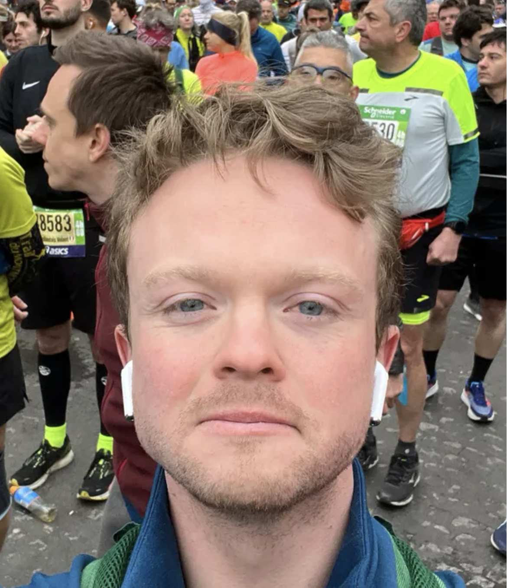

I’m a freelance illustrator based in London.
I have been drawing forever and making political cartoons since university.
Much of my recent work has been illustration for Role Playing Games (RPGs), typically with a fantasy-horror tone and setting.
In particular, I illustrated Best Left Buried and various supplementary works for Soulmuppet Publishing. My work in this field has included cover art in colour, interior black-and-white illustrations, and maps.
My core medium is pen on paper. I often fuse this with digital media - which gives limitless potential for colouring and collage - but I always aim to retain the naturalness, the slight roughness and unpredictability of the physical drawings.
I draw inspiration from all over the place but particularly admire the use of line and command of chaos shown by Ralph Steadman, Gerald Scarfe and John Blanche. More fundamentally, I wouldn’t be the same without early obsessions with the work of Francis Bacon and Diego Rivera, amongst many others.

Contact details
E: benhbrown1995@gmail.comI: benbeebsbrownart
Itch: benbeebsbrown.itch.io